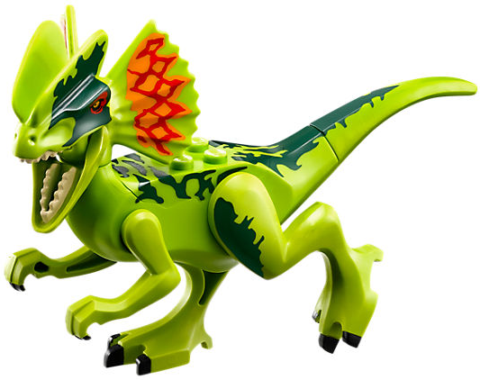

Le Dilophosaure, dont le nom scientifique est Dilophosaurus, est un dinosaure théropode carnivore. Il a sur sa tête deux crêtes, d’où son nom de Dilophosaurus qui veut dire lézard à deux crêtes. Ses crêtes sont composées d’extensions du nez et des os lacrymaux. 